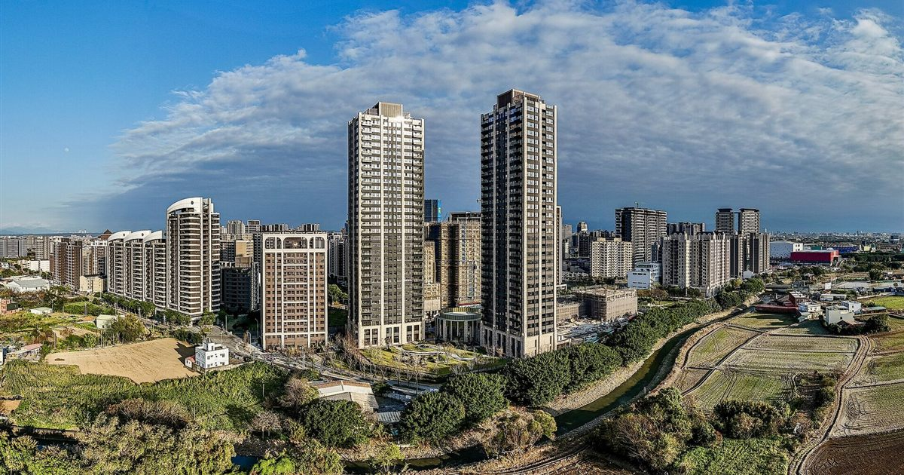

封面照片：RoMANhui77｜Wikimedia Commons｜CC0 公眾領域
青埔 A17、A18、A19 該選哪一個？老實比較給你
作者 周家篁 已發布：統計至 2026 年 11 月
常有人問我「青埔到底要買哪一區」。A17、A18、A19 同樣掛著「青埔」招牌，但其實是機能發展的三個不同階段，不是同一件事的三種口味。把現況攤開來看，會比較好決定。
三個站，三種定位
A17 領航站：鄰近中壢交界，是青埔開發較早成形的一側，生活機能偏向既有社區型。以 2026 年第一季公開資料估算，約 51.7 萬/坪，是三區裡目前單價較低的一邊。
A18 高鐵站：整個特定區的機能核心，高鐵、客運轉乘、置地廣場（Xpark 所在地）、國泰人壽高鐵前站開發案都集中在這一側，約 54.1 萬/坪，是目前三區單價最高的。
A19 體育園區站：鄰近青塘園、棒球場、青埔國中，臻鼎總部＋誠品生活、市立美術館主體都規劃在這一帶，屬於機能還在長大的新興重劃區，約 53.5 萬/坪。
價格差不只是「貴一點」
A17 跟 A18 之間約 2.6 萬/坪的價差，反映的其實是「機能已經到位」跟「還在等建設落地」的差別。核心區（可以用亞矽創中心或 A18、A19 站點為圓心，抓步行約 12 分鐘、800～1,000 公尺內）的物件通常抗跌性較好，這也是 A18 目前站上三區最高單價的原因。
建設進度，決定的是「現在」還是「未來」
A18 這一側，既有的置地廣場商場已經營運，國泰人壽高鐵前站開發案也已動土，買的人多半是看「現成機能」。
A19 這一側，臻鼎總部＋誠品生活拚 2028 年底開幕、市立美術館主體拚 2026 年底完工、目標 2028 年第一季開館，這些都還在進行中。現在的單價比 A18 略低，等於用比較低的成本提前卡位，但也要有「等建設落地」的心理準備，實際進度仍以官方最新公告為準。
A17 這一側，目前公開資訊裡沒有特別大型的開發案在進行，機能相對穩定，買的人看重的通常是現有生活圈，而不是等待題材。
三種買房動機，適合看哪一區
首購、預算有限、重視現成生活機能 → 可以先看 A17，總價相對較低，機能已經穩定，不用賭建設落地時間。
重視交通轉乘、通勤效率、長期自住想買核心區保值 → A18 機能最密集，雖然目前單價三區最高，但抗跌性也相對較好。
能接受一點時間成本、看好區域發展、換屋或置產型買方 → A19 單價略低於 A18，但臻鼎＋誠品、美術館等建設仍在推進，潛在空間跟時間風險並存，要有耐心等。
給還在猶豫的你
這三區沒有哪一個「正確答案」，差別是哪一區符合你現在的預算、動機，跟你願意承擔多少等待建設落地的時間風險。如果你想針對自己的狀況聊聊該看哪一區，歡迎直接找我，我可以依你的預算跟需求帶你實際比較。